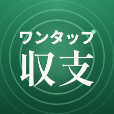
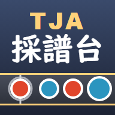

ゲーム
アプリ・ツール


TJA採譜台
- ブラウザ
- iPhone（審査中）
曲を聞きながら叩いて、太鼓さん次郎などで遊べる譜面（TJA）を作るツールです。自動で譜面を作ることもできます。「太鼓の達人」シリーズの非公式なファンメイドツールです。
音楽
maosun の曲
- Apple Music
Suno の有料版で作った曲を、maosun の名前で配信しています。シングル「転落牌」「紅茶と黒猫」、EP「自由な人生」などがあります。
ひとりで、ゲームやアプリを作っています。


曲を聞きながら叩いて、太鼓さん次郎などで遊べる譜面（TJA）を作るツールです。自動で譜面を作ることもできます。「太鼓の達人」シリーズの非公式なファンメイドツールです。
Suno の有料版で作った曲を、maosun の名前で配信しています。シングル「転落牌」「紅茶と黒猫」、EP「自由な人生」などがあります。
maosun です。ひとりでゲーム・アプリ・ツールを作り、曲も配信しています。